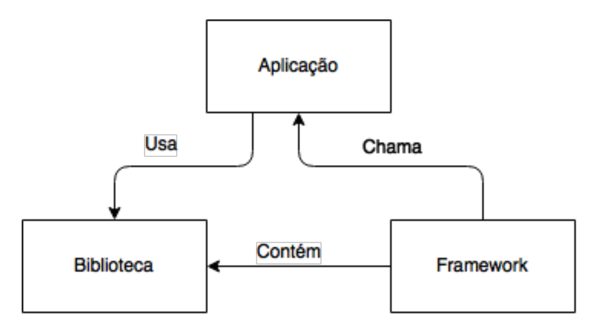
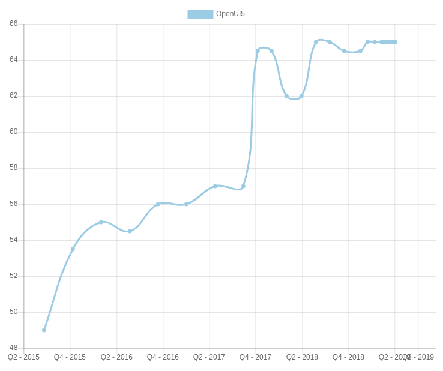
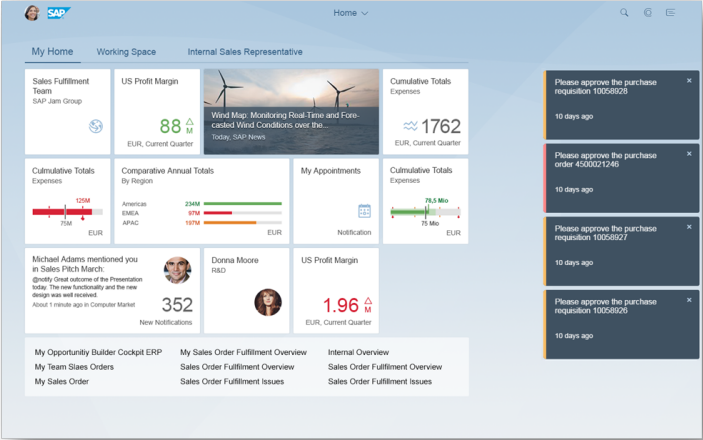
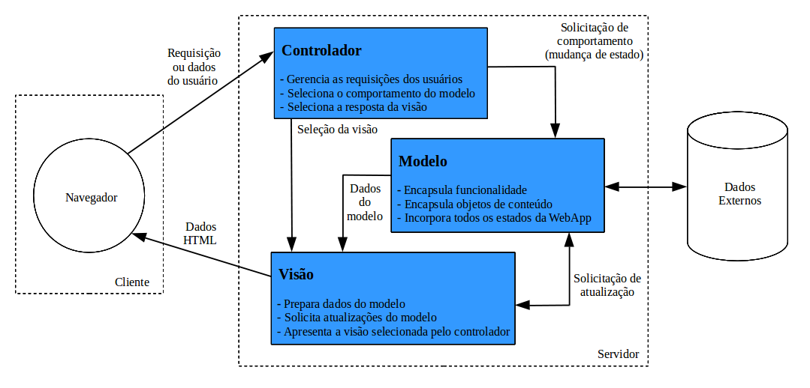
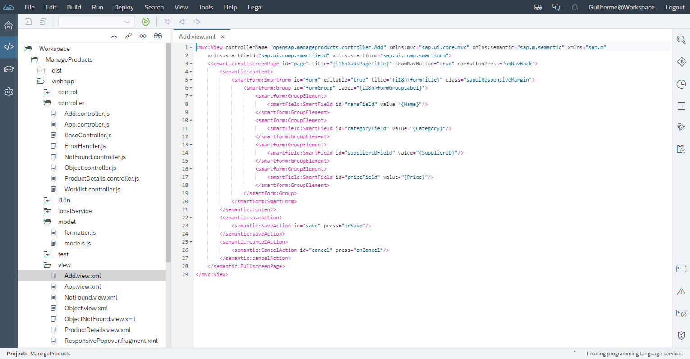
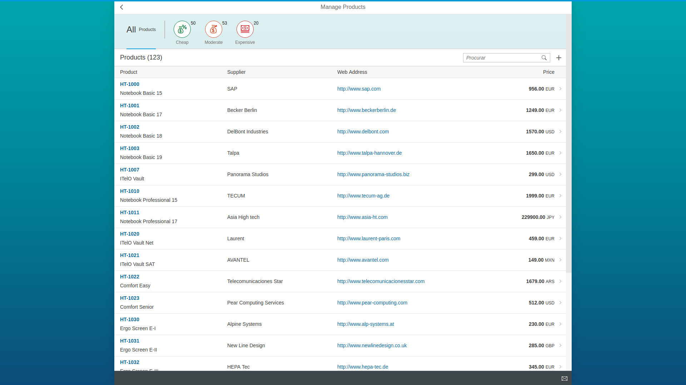

Estrutura, principais conceitos e demonstrações de uso.
Com o crescimento da necessidade tecnológica e do avanço da Web ao longo dos anos, desenvolvedores e
empresas foram se moldando para melhor atender às demandas solicitadas. O exemplo utilizado neste artigo
é o da multinacional alemã de sistemas integrados de gestão empresarial (ERP) SAP SE, que viu neste
crescimento a possibilidade de expandir os meios de entrega dos dados de seus clientes não apenas
através de seus softwares desktop (SAP GUI), mas também através de uma de suas recentes tecnologias: o
kit de ferramentas de desenvolvimento de interface do usuário da SAP para HTML5, ou simplesmente SAPUI5,
uma coleção de bibliotecas desenvolvida com HTML5, CSS e JavaScript, com o intuito de oferecer uma
melhor interface de usuário para seus produtos.
INTRODUÇÃO
As necessidades e demandas em evolução do usuário podem facilmente reformular a composição e o design de
um aplicativo. A SAP percebeu que a interface do usuário (UI) está mais suscetível a mudanças hoje do
que nunca.
Baseado neste argumento é que iniciamos a análise do projeto que reformulou a experiência do
usuário (UX) dos produtos da multinacional alemã de sistemas integrados de gestão empresarial (ERP) SAP
SE, promovendo um conceito de simplicidade, usabilidade, acessibilidade e modernidade para aqueles que
desenvolvem ou simplesmente utilizam suas aplicações no dia a dia do trabalho.
JAVASCRIPT
A linguagem JavaScript, também conhecida popularmente pela sua sigla JS, foi desenvolvida por Brendan
Eich em 1995 enquanto trabalhava na Netscape, sendo que sua primeira versão foi implementada no
navegador Netscape 2.0, no ano de 1996. Neste mesmo ano, a Microsoft desenvolveu e lançou sua versão com
o nome JScript e introduziu em seu navegador Internet Explorer 3.0, porém, por possuírem funcionalidades
implementadas de maneiras diferentes, os navegadores da época não seguiam um padrão unificado, sendo
difícil implementar scripts que funcionassem em ambos.
No início, o JavaScript foi introduzido como uma forma de adicionar programas às páginas no
Netscape e, ao decorrer do tempo, a linguagem foi sendo adaptada por outros navegadores. Foi padronizada
em 1997, formalizando-se como a linguagem deveria trabalhar. Denominado de padrão ECMAScript, após a
organização ECMA International realizar a padronização, os nomes JavaScript e ECMAScript acabaram se
tornando sinônimos para a mesma linguagem, embora o nome JavaScript seja uma marca registrada atualmente
de propriedade da empresa Oracle. Hoje, é uma linguagem muito utilizada na Web, para fornecer diversas
formas de interatividade.
Dentre suas principais características: uma linguagem pequena e leve, interpretada (não
compilada), orientada a objetos, multiplataforma, com tipagem dinâmica (tipos de dados não precisam ser
declarados) e com suporte a funções de primeira classe.
FRAMEWORKS E BIBLIOTECAS
O tempo passou e, com ele, a necessidade de novas implementações e novas maneiras de escrever código
JavaScript também surgiram. Frameworks e bibliotecas são ferramentas que impõem funcionalidades e
conjuntos de padrões de desenvolvimento que auxiliam o desenvolvedor na escrita do código e na
facilidade de manutenção da aplicação, havendo frameworks e bibliotecas para as mais diversas linguagens
de programação existentes hoje, e surgindo novos modelos a cada dia. Uma analogia básica para distinguir
um framework de uma biblioteca é que, enquanto um framework pode conter várias bibliotecas em seu escopo
e realiza a chamada de uma aplicação, uma aplicação pode usar bibliotecas, mesmo que elas não pertençam
a um framework. A analogia pode ser exemplificada pelo Diagrama 1, exibido a seguir.

Biblioteca vs. Framework.
Por mais que essas ferramentas auxiliem e ajudem o programador com maior qualidade e rapidez no
desenvolvimento do código, depender delas pode ser um problema caso um dia não estiverem mais disponíveis ou
seus mantenedores descontinuarem suas atualizações. Por isso, é sempre bom procurar entender mais de
JavaScript do que do framework ou da biblioteca em si, caso empecilhos aconteçam.
FRAMEWORKS
Um framework (ou framework de aplicação) é um projeto de subsistema composto por um conjunto de classes
abstratas e concretas e as interfaces entre elas. Detalhes específicos do framework utilizado em um
projeto, por exemplo, são aplicados através da implementação de componentes e classes abstratas do
mesmo. Os frameworks raramente são aplicações propriamente ditas. As aplicações são geralmente
constituídas pela integração de vários frameworks. Atualmente, Angular e Vue.js são alguns dos exemplos
de frameworks mais conhecidos e usados no mundo JavaScript.
BIBLIOTECAS
É o recurso mais utilizado no mundo da programação, enquanto muitas pessoas não se dão conta do quão
importante é e do quanto utilizam. Pode-se dizer que as bibliotecas são coleções de implementações de
comportamentos, importados diretamente no código de uma aplicação, possuindo uma interface bem definida
para cada comportamento e método invocado. Dito em outras palavras, bibliotecas são usadas para não
precisar “reinventar a roda”, conceito utilizado quando se quer dizer que não é necessário criar tudo do
zero e que já existem funcionalidades das quais precisamos, prontas para serem utilizadas. jQuery é uma
das bibliotecas JS mais utilizadas por desenvolvedores, tendo como uma implementação de comportamento a
manipulação do HTML. Atualmente, uma biblioteca muito conhecida e utilizada é a React.
SAPUI5
Em 2011, a SAP lançou o SAPUI5 (ou simplesmente UI5), uma biblioteca de desenvolvimento de interface do
cliente baseada em JavaScript (com jQuery como base), CSS e HTML5, que incentiva uma experiência de
usuário consistente. Os aplicativos desenvolvidos com esta tecnologia são totalmente responsivos nos
ambientes em que são executados e, dependendo do dispositivo (smartphone, tablet ou desktop), são
utilizadas diferentes bibliotecas de interface do usuário. Os controles da interface do usuário se
adaptam automaticamente às capacidades de cada dispositivo.
A biblioteca é entregue com alguns produtos da SAP, tais como NetWeaver, Hana e Hana Cloud
Plataform. O SAPUI5 não gera nenhum custo adicional para os clientes que adquirem seus produtos, mas,
para usufruir das funcionalidades dessas ferramentas, uma boa quantia de dinheiro já foi gasta.
O SAPUI5 suporta o conceito MVC (Model-View-Controller), que é um padrão de arquitetura de
software para implementar interfaces de usuário, onde a manipulação do modelo de dados, o design da UI e
a lógica do aplicativo ficam separadas, e o meio mais recomendado para acessar dados corporativos da
aplicação é utilizando o modelo OData. Tanto MVC quanto OData serão abordados em maiores detalhes
posteriormente neste trabalho. No Diagrama 2, a seguir, observa-se a arquitetura empregada pelo SAPUI5:
Visão geral da arquitetura do SAPUI5.
Quando os usuários acessam um aplicativo baseado em SAPUI5 a partir do seu dispositivo, uma
solicitação é enviada ao respectivo servidor para carregar o aplicativo no navegador. A View acessa as
bibliotecas relevantes e, normalmente, o Model também é instanciado e os dados de negócios são buscados
no banco de dados.
OPENUI5
O OpenUI5 é a versão gratuita e open source da biblioteca SAPUI5, disponível sob a licença Apache 2.0,
permitindo que a mesma seja usada, distribuída e alterada. Todo o núcleo do OpenUI5 e do SAPUI5,
contendo toda a funcionalidade central da biblioteca, são idênticos, incluindo as bibliotecas de
controle mais comumente usadas, que possuem a grande maioria dos controles existentes. Dentre as
diferenças entre as duas versões, estão algumas bibliotecas de controle mais exóticas, que ainda não
foram colocadas sob licença de código aberto. Existem muitas razões para isso, dentre elas questões
legais e esclarecimentos organizacionais, desenvolvidos em diferentes partes do SAP. Além da diferença
na perspectiva técnica, existem também diferenças relacionadas ao suporte de suas aplicações, enquanto a
versão comercial é atrelada a algum tipo de contrato, a correção de bugs é garantida com maior
velocidade, mas, ainda assim, a versão open source também recebe as correções realizadas para o SAPUI5,
sendo essa uma questão de tempo.
De acordo com o HotFrameworks, plataforma que realiza o ranqueamento de frameworks e bibliotecas
de acordo com seu número de estrelas no repositório do GitHub e no número de perguntas no Stack
Overflow, o OpenUI5 ocupa a 38° posição de popularidade entre os frameworks e bibliotecas de todas as
linguagens de programação, e a 13° posição entre as baseadas em JavaScript. Entre agosto e outubro de
2017, teve um crescimento exponencial nas plataformas citadas acima, conforme apresenta o Gráfico 1.

Crescimento da popularidade do OpenUI5 de 2015 a 2019.
SAP FIORI
No ambiente corporativo atual, os usuários enfrentam muitos desafios em busca de informações precisas,
em um curto espaço de tempo. Além disso, a disposição dessas informações a qualquer hora e em qualquer
lugar é muito importante para a sua capacidade de tomar decisões inteligentes e rápidas. A solução da
SAP para este problema é o SAP Fiori, aplicação desenvolvida totalmente com SAPUI5 em seu front-end, que
oferece uma experiência baseada em funções personalizadas do usuário (UX) para compromissos de toda a
empresa, através de linhas de negócios (LOBs), com usabilidade ideal em vários dispositivos para
implementar, personalizar e desenvolver aplicativos.
A empresa SAP, ao realizar uma pesquisa, constatou que a maioria dos usuários de suas aplicações
utilizam a interface de usuário do SAP (SAP GUI). Estas incluíam aplicações comuns relacionadas a
interações entre o gerente e o funcionário, como por exemplo, solicitação de licença, pedido de viagem,
etc. Essas interfaces possuíam mais de 300.000 mil telas com várias funções. Assim, a empresa verificou
quais eram os aplicativos utilizados com maior frequência e decidiu renová-los, nascendo o SAP Fiori.

Tela de um aplicação SAP Fiori desenvolvida com UI5.
PADRÃO MVC
O UI5 utiliza o conceito de MVC para atingir os objetivos de suporte ao desenvolvimento em equipes
distribuídas com diferentes locais de origem, adicionar capacidade de declaração de interface do usuário
(em comparação com uma construção programática) e propor uma estrutura de arquivos, nomenclaturas e
padrões de uso. Hoje em dia, o conceito de MVC é aplicado de uma maneira um pouco diferente, do que a
descrita pelo seu próprio criador, Trygve Reenskaug:
"Fiz a primeira implementação e escrevi os relatórios originais do MVC enquanto eu era um
cientista visitante no Laboratório de Pesquisas da Xerox em Palo Alto (PARC) em 1978/79. MVC foi criado
como uma solução óbvia para o problema geral de fornecer aos usuários o controle sobre suas informações,
visto de várias perspectivas. MVC criou uma quantidade surpreendente de interesse. Alguns textos até
usam variantes pervertidas para o propósito oposto de fazer o computador controlar o usuário. MVC foi
concebido como uma solução geral para o problema de usuários controlarem um conjunto de dados grande e
complexo."
Na arquitetura de WebApps, as aplicações devem ser desenvolvidas utilizando-se camadas onde
diferentes fatores são levados em conta; os dados da aplicação obrigatoriamente devem ser separados do
conteúdo da página e esses conteúdos claramente devem estar separados dos aspectos da interface. O
Diagrama 3, a seguir, demonstra o funcionamento do padrão MVC em uma aplicação Web.

A arquitetura MVC em uma aplicação Web.
PROTOCOLO ODATA
Open Data Protocol (OData) é um padrão aberto que fornece interoperabilidade e acesso a fontes de dados
via websites. Foi construído baseado em tecnologias Web, como HTTP, XML e JSON para fornecer acesso à
informação a partir de uma variedade de aplicações. Ele foi concebido para proporcionar uma API REST
acessível através da formação de uma URI apropriada, atribuindo-lhe para o cabeçalho HTTP
correspondente. Serviços OData são desenvolvidos para atender diversas aplicações. Simplificando, OData
é usado para expor, acessar e modificar informações de diferentes fontes.
NAMESPACES
UI5 é uma biblioteca nada modesta. Para segregar ainda mais as diferentes funcionalidades da biblioteca,
desenvolvedores da SAP optaram por criar namespaces dentro do namespace sap, cada um com sua
responsabilidade. Abaixo do namespace sap, existem dois objetos:
• sap.ui - Implementa diferentes funcionalidades JavaScript; • sap.m - Controles de interface gráfica para dispositivos móveis.
Abaixo do namespace sap.ui, se encontram outros namespaces importantes para a construção de
aplicações UI5, tais como:
• sap.ui.app – Contém classes depreciadas da biblioteca; • sap.ui.base – Classes base de todo o UI5; • sap.ui.commons – Controles de interface gráfica para desktops; • sap.ui.core – Classes base de controles de interface gráfica, componentes e MVC; • sap.ui.device – Classes para extrair dados e funcionalidades de dispositivos
móveis; • sap.ui.model – Comunicação entre Model e Controller.
DEMONSTRAÇÃO
Aplicações UI5 podem ser desenvolvidas no ambiente em que o desenvolvedor se sentir mais acomodado para
trabalhar, podendo ser em editores de texto (importando a biblioteca UI5 via tag script), na IDE Eclipse
(com o plugin SAPUI5 Tools devidamente instalado) ou, também, via SAP Web IDE, uma ferramenta poderosa,
extensível e baseada na Web que simplifica tanto o desenvolvimento de aplicativos SAP Fiori de ponta a
ponta quanto o ciclo de vida de aplicativos full-stack (UI, lógica de negócios e banco de dados).
Os ambientes de desenvolvimento integrado (IDE) são softwares que buscam facilitar o trabalho dos
programadores, podendo importar diversas funcionalidades de uma determinada linguagem de programação e
realizar a depuração do código, encontrando possíveis falhas e auxiliando em suas correções. A Figura 1,
a seguir, exibe um projeto em UI5 com o padrão MVC e toda sua hierarquia devidamente aplicada, sendo
desenvolvido no ambiente SAP Web IDE.

Estrutura de uma aplicação UI5 no ambiente SAP Web IDE.
A seguir, a Figura 2 exibe tal aplicativo em execução no navegador. Observa-se que
todo o layout, inclusive os estilos, já foram proporcionados pelos próprios controles de
interface da biblioteca UI5.

Aplicação UI5 sendo executada no navegador.
RESULTADOS
A Web e seu constante desenvolvimento fazem com que, a cada dia, surjam novas ferramentas para trabalhar
com os mais diversos tipos de aplicações disponíveis no mercado. Estar sempre atualizado com novas
tecnologias ou, ao menos, conhecer seus conceitos, é um grande passo para se familiarizar com o futuro e
garantir seu espaço no mercado de trabalho.
Antes da escolha de um framework ou biblioteca para se utilizar em uma aplicação, é necessário um
estudo aprofundado nas possíveis alternativas, buscando vantagens e desvantagens de seu uso e ponderando
as funcionalidades de acordo com as necessidades do projeto. Sendo uma tecnologia de código aberto, o
OpenUI5 apresenta-se como uma opção viável para o desenvolvimento de aplicações Web corporativas
complexas, justamente por ser desenvolvido por uma das maiores empresas de ERP do planeta e por permitir
explorar de uma maneira tão aberta o que ela pode oferecer, levando em consideração que, dificilmente,
são encontradas informações e treinamentos sobre sua gama de produtos sem precisar pagar um valor
consideravelmente alto por eles.
Todavia, por se tratar de uma tecnologia recente no mercado, a falta de materiais e opiniões
publicados sobre a biblioteca em questão podem dificultar que seja encontrada e considerada por novos
possíveis utilizadores, mas, como toda ferramenta bem estruturada, sua documentação é um ótimo ponto de
partida.